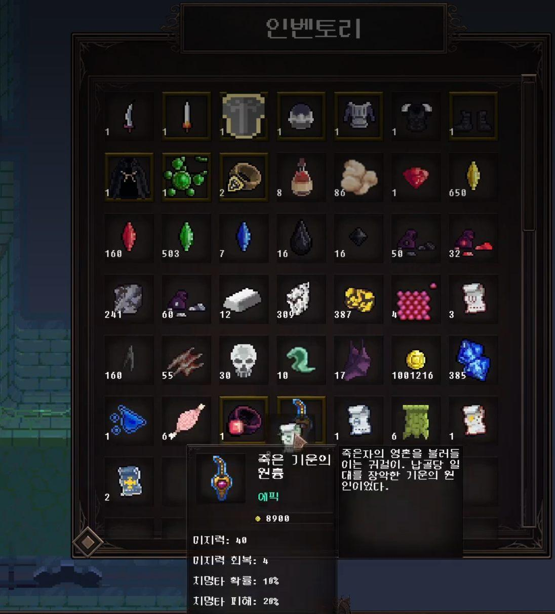

클라이언트
입력·애니메이션, 장비와 스킬 UI, 인벤토리·퀘스트·지도·컷씬을 구현했습니다.
SOLO PROJECT · GAME & SERVER ENGINEERING
혼자 세계를 탐험하는 몰입감과, 다른 플레이어와 던전을 공략하는 경험을 함께 만들고 싶었습니다. Unity 클라이언트와 C# 전용 서버, 데이터베이스를 구현하며 전투·성장·파티·월드 이동을 하나의 플레이 흐름으로 연결했습니다.

01 / PLAYABLE SYSTEMS
플레이어는 세계를 침식하는 존재인 ‘이빨’을 추적합니다. 적을 처치해 얻은 장비가 새로운 스킬로 이어지고, 스킬의 조합이 다음 던전의 공략 방식을 바꾸는 구조를 목표로 했습니다.
플레이어의 입력을 화면에 표현하는 것과, 여러 접속자가 공유할 상태를 서버에서 처리하는 것을 함께 다뤘습니다. 로그인·월드 입장부터 전투·아이템 획득·퀘스트 저장까지 연결하는 데 개발의 초점을 두었습니다.
기획과 월드 구성도 직접 담당했습니다. 아트는 상용 에셋을 재구성하고 지도 등 필요한 리소스를 직접 제작해, 개인 개발 범위 안에서 플레이 가능한 장면을 완성했습니다.
세계관·월드 제작 과정 보기 →입력·애니메이션, 장비와 스킬 UI, 인벤토리·퀘스트·지도·컷씬을 구현했습니다.
세션과 월드 입장, 전투·피해 처리, 범위 기반 동기화, 파티와 매칭 흐름을 구현했습니다.
EF Core 모델과 마이그레이션을 관리하고, 아이템·스킬·맵 데이터를 플레이 시스템에 연결했습니다.
02 / SERVER & PERSISTENCE
클라이언트는 이동·스킬 등의 요청을 전달하고, 게임 서버는 월드 상태와 전투 결과를 처리합니다. 저장이 필요한 작업은 DB 처리 경로로 넘기고, 결과를 게임 상태와 클라이언트에 반영하도록 구성했습니다.
입력 · UI · 애니메이션
요청 전송 / 서버 결과 표시
패킷 처리 · GameRoom · 작업 큐
전투 / 월드 이동 / 주변 객체 전송
캐릭터 · 아이템 · 퀘스트
영속 데이터 저장
주요 책임을 요약한 구조입니다. 계정 인증 서버와 세부 통신 경로는 개발 과정 페이지에서 설명합니다.
플레이어 수와 객체 수가 늘어날 때, 각 접속자에게 불필요한 월드 정보까지 보내지 않도록 전송 대상을 나눴습니다.
GameRoom.Broadcast는 인접 Zone에서 플레이어를 모은 뒤, 기준 좌표에서 X·Y 각각 20셀 이내인 대상에게 패킷을 보냅니다. 이를 통해 전송 범위를 월드 전체에서 주변 영역으로 제한했습니다.
시야 갱신에는 500ms 주기, 새로 보이는 다른 플레이어의 장비 정보에는 100ms 지연 예약을 사용합니다. 전송 범위와 갱신 시점을 조절할 수 있도록 분리한 설계입니다.
아이템 획득은 화면 표시와 DB 기록이 연결돼야 합니다. 아이템 추가 경로에서는 저장 결과를 확인한 뒤 플레이어 상태에 반영하도록 순서를 정했습니다.
포탈을 통과할 때는 화면뿐 아니라 서버의 소속 룸, 좌표, 저장된 맵 정보도 바뀝니다. 기존 룸에서 퇴장한 뒤 목적지 정보를 갱신하고, 맵 저장 작업과 목적지 룸의 입장 작업을 각각 등록했습니다.
03 / COMBAT & PROGRESSION
전투 자원과 스킬 슬롯을 제한해, 적의 패턴을 보고 어떤 스킬을 언제 사용할지 고민하게 만들고 싶었습니다. 장비의 스킬 옵션을 UI와 입력에 연결하고, 실제 타격 시점은 스킬 데이터로 다뤘습니다.
장비를 바꾸면 UI가 장착 아이템의 Skill 옵션을 읽고 무기·투구·장신구 슬롯을 갱신합니다. 플레이어가 해당 슬롯을 사용하면 연결된 SkillId가 서버 요청 패킷으로 전달됩니다.
장비 획득이 능력치 증가와 새로운 전투 수단으로 이어지도록, 아이템·UI·스킬 입력을 같은 데이터로 연결했습니다.
연속 공격의 타격 시점을 terms 목록으로 정의했습니다. 서버의 CombatAsync는 각 타격 사이의 간격을 공격속도로 보정한 뒤 대상에 피해를 적용합니다. 스킬의 타격 횟수와 간격을 데이터로 조정할 수 있도록 한 구현입니다.
코드: Skill_Attack · CombatAsync / GameRoom_Battle · 스킬 요청과 피해 계산

04 / PROTOCOL TOOLING
클라이언트와 서버가 같은 메시지를 해석하려면 패킷 ID와 등록 코드가 맞아야 합니다. 프로토콜 정의를 기준으로 양쪽 코드를 생성하고, 실행 중 반복되던 ID 변환과 중간 버퍼 복사를 줄였습니다.
메시지 ID 정의를 파싱해 클라이언트·서버의 PacketManager와 ID 조회용 코드를 함께 생성합니다.
송신 시 패킷 이름을 매번 enum으로 변환하던 경로를 생성된 MsgIdCache 조회로 바꿨습니다.
직렬화 결과를 임시 배열에 만든 뒤 복사하던 경로를 줄이고, 헤더 뒤의 송신 버퍼에 직접 기록합니다.
코드: PacketGenerator / ClientSession · Send
임시 페이로드 배열과 복사 단계를 제거했습니다. 최종 송신 버퍼와 스트림 객체는 생성합니다.
README의 개발 기록에는 같은 Zone에 더미 10세션을 배치한 시험에서 평균 틱이 약 18ms에서 6ms로 줄었다고 정리돼 있습니다. 원시 로그와 전체 실행 조건을 함께 제공하지 않아, 성능 비교를 위해서는 동일 조건의 재측정이 필요합니다.
자료: README의 개발 기록 / 패킷 파이프라인 개선 보고서
05 / OUTCOME & REFLECTION
처음에는 대규모 RPG와 싱글 플레이의 몰입을 함께 담으려 했습니다. 개발을 진행하며 개별 플레이어의 탐험과 전투 경험에 무게를 두고, 서버 기반 파티·매칭 구조를 연결했습니다. 이 과정에서 화면의 기능 하나가 서버 상태와 저장 데이터까지 이어진다는 점을 직접 다뤘습니다.
| 영역 | 이 프로젝트에서 구현한 내용 | 확인 자료 |
|---|---|---|
| 게임 경험 | 전투·장비 스킬·성장·퀘스트·월드 UI | 플레이 영상과 기존 시연 화면 |
| 서버·데이터 | 월드 전송 범위, 맵 전환, DB 저장 후 상태 반영 | GameRoom · DbTransaction 코드 |
| 개발 도구 | 프로토콜 등록 코드 생성, 송신 경로 개선 | PacketGenerator · ClientSession 코드 |
다음 검증 과제. 시야 경계에서 객체가 들어오고 나가는 경우, 전투 도중 룸이 바뀌는 경우, DB 저장이 실패하는 경우를 회귀 테스트로 보강할 필요가 있습니다. 입력 검증과 부하 시험도 확대해야 합니다. 현재 근거는 플레이 시연과 공개 코드이며, 대규모 운영 성능은 별도 검증이 필요합니다.
코드 근거: DawnStar 공개 저장소 b997fc4 기준. 영상은 기존 프로젝트 시연 자료입니다.